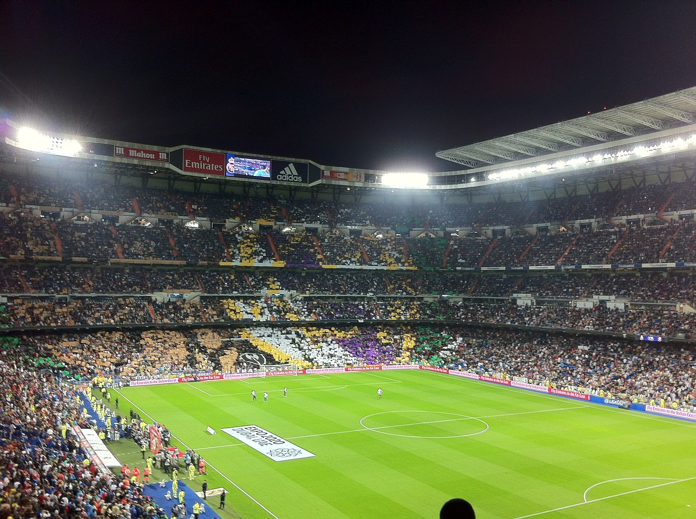
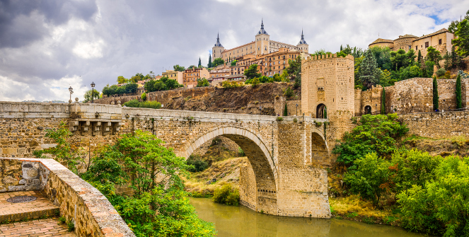

Me In Madrid
Madrid is located in the central part of Spain, on the high plateau known as the Meseta Central.
It is situated at an elevation of approximately 646 meters (2,119 feet) above sea level.
As of my last knowledge update in September 2021, Madrid had a population of around 3.3 million people, making it the largest city in Spain.
The Royal Palace (Palacio Real) is one of the city's most iconic landmarks. Although it is no longer the official residence of the Spanish royal family, it is still used for state ceremonies.
The Plaza Mayor is a historic square in the heart of the city, known for its striking architecture and lively atmosphere.
The Santiago Bernabéu Stadium is home to the famous football (soccer) club Real Madrid and is a pilgrimage site for football fans.
Madrid offers a wide range of culinary delights, including traditional Spanish dishes like tapas, paella, and cocido madrileño (a hearty chickpea-based stew).
The city's food scene includes a mix of traditional taverns, trendy restaurants, and bustling food markets.
Madrid is well-connected by a network of metro lines and buses, making it easy to navigate the city.
The Adolfo Suárez Madrid-Barajas Airport is the main international airport serving the city.
Places I visited in Madrid
The Royal Palace
Santiago Bernabéu Stadium
The Plaza Mayor
Toledo
The Royal Palace

The Royal Palace of Madrid, an iconic symbol of Spanish heritage and grandeur, stands proudly as one of Europe's most remarkable royal residences. Located in the heart of the Spanish capital, this majestic palace is a testament to architectural brilliance and historical significance. Built in the 18th century, the palace's neoclassical façade exudes elegance and opulence, while its sprawling interior offers a glimpse into the lives of Spain's monarchy throughout the ages. The palace boasts an impressive array of lavishly adorned rooms, from the lavish Throne Room and Hall of Columns to the intricately designed Royal Chapel, each exquisitely furnished and adorned with priceless artworks, chandeliers, and tapestries. Overlooking the scenic Plaza de Oriente and surrounded by meticulously manicured gardens, the Royal Palace continues to be a focal point for state ceremonies, royal events, and a magnet for tourists seeking to immerse themselves in Spain's rich regal heritage. Its historical significance, architectural splendor, and cultural resonance make the Royal Palace of Madrid a must-visit destination for those eager to experience the grandeur of Spanish monarchy and history.
Santiago Bernabéu Stadium

The Santiago Bernabéu Stadium stands as a hallowed ground for football enthusiasts, an iconic symbol of the sport's passion and history. Nestled in the heart of Madrid, Spain, this legendary stadium is the home of Real Madrid, one of the world's most storied and successful football clubs. Named after the club's former president, Santiago Bernabéu, the stadium has witnessed countless historic moments, from thrilling victories to heart-wrenching defeats, etching its name into the annals of football lore. With a seating capacity that accommodates tens of thousands of fervent fans, the Santiago Bernabéu exudes an electric atmosphere during matchdays, as supporters from around the globe gather to celebrate the beautiful game. Its modern architectural design, encompassing towering stands and cutting-edge facilities, offers an unparalleled spectator experience. As a stage for both domestic and international competitions, the Santiago Bernabéu has hosted World Cup matches and UEFA Champions League finals, cementing its status as a venue of immense prestige. Beyond its footballing significance, the Santiago Bernabéu Stadium represents a testament to the enduring legacy of Real Madrid and its indelible impact on the world of sports.
The Plaza Mayor

The Plaza Mayor is a historic and iconic square nestled at the heart of Madrid, Spain. Renowned for its grandeur and architectural elegance, the Plaza Mayor has stood as a central gathering place for locals and visitors alike for centuries. Its origins trace back to the early 17th century when King Philip III ordered its construction, and it has since witnessed a multitude of events that have shaped the city's history. Enclosed by a series of charming three-story buildings adorned with picturesque balconies, the square exudes a timeless charm that seamlessly blends the past and the present. The stunning arcades, intricate facades, and a symmetrical layout embody the essence of Spanish Baroque architecture. Over the years, the Plaza Mayor has served various functions, from hosting royal ceremonies, markets, and bullfights to evolving into a vibrant hub of social and cultural activities. Today, the square bustles with life as cafes, restaurants, and shops line its perimeter, offering a delightful space to savor Madrid's culinary delights and soak in its vibrant atmosphere. The Plaza Mayor stands not just as a physical landmark, but as a symbol of Madrid's rich heritage, a testament to the city's enduring spirit, and a beloved destination that continues to captivate all who visit.
Toledo

Toledo, a captivating city nestled in the heart of Spain, is a testament to the country's rich history and cultural heritage. Known as the "City of Three Cultures," Toledo beautifully weaves together the influences of Christian, Muslim, and Jewish civilizations that have shaped its character over the centuries. With its labyrinthine medieval streets, grand architecture, and stunning panoramic views over the Tagus River, Toledo stands as a living museum that showcases the convergence of diverse civilizations. The city's architectural wonders, including the iconic Alcázar fortress and the awe-inspiring Toledo Cathedral, exemplify its historical significance and artistic brilliance. Wandering through its cobbled alleys, visitors can explore charming shops offering intricate Damascene metalwork and traditional crafts, further immersing themselves in Toledo's cultural tapestry.As the sun sets, casting a warm glow upon the ancient stone facades, one cannot help but feel transported through time, experiencing the enduring allure of Toledo, a city that remains a captivating gem in Spain's crown.